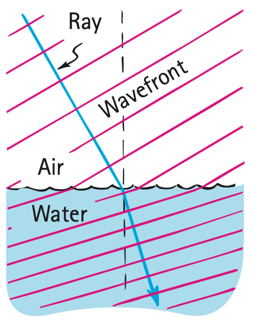

Cause of Refraction
Refraction occurs when the average speed of light changes in going from one transparent medium to another. We can understand this by considering the action of a pair of toy cart wheels connected to an axle as the wheels roll gently downhill from a smooth sidewalk onto a grass lawn. If the wheels meet the grass at an angle, as Figure 28.23 shows, they are deflected from their straight-line course. Note that the left wheel slows first when it interacts with the grass on the lawn. The higher-speed right wheel on the sidewalk then pivots about the slower-moving left wheel. The direction of the rolling wheels is bent toward the normal (the black dashed line perpendicular to the grass-sidewalk border in Figure 28.24).

A light wave bends in a similar way, as shown in Figure 28.25. Note the direction of light, indicated by the blue arrow (the light ray), and also note the wavefronts (red) drawn at right angles to the ray. (Recall that a wavefront is the crest, trough, or any continuous portion of a wave.) In the figure the wave meets the water surface at an angle. This means that the left portion of the wave slows down in the water while the remainder in the air travels at speed c. The light ray remains perpendicular to the wavefront and therefore bends at the surface. It bends like the wheels bend when they roll from the sidewalk into the grass. In both cases, the bending is a consequence of a change in speed.

The changeable speed of light provides a wave explanation for mirages. Sample wavefronts coming from the top of a tree on a hot day are shown in Figure 28.26. If the temperature of the air were uniform, the average speed of light would be the same in all parts of the air; light traveling toward the ground would meet the ground. But the air is warmer and less dense near the ground, and the wavefronts gain speed as they travel downward, making them bend upward. So, when the observer looks downward, he sees the top of the tree—this is a mirage.

Refraction accounts for many illusions. A common one is the apparent bending of a stick that is partially in water. The submerged part seems closer to the surface than it really is. Likewise when you view a fish in the water, the fish appears nearer to the surface and closer than it really is (Figure 28.28). If we look straight down into water, an object submerged 4 m beneath the surface will appear to be only 3 m deep. Because of refraction, submerged objects appear to be closer, so they seem bigger.


We see that we can interpret the bending of light at the surface of the water in at least two ways. We can say that the light that leaves the fish and reaches the observer’s eye does so in the least time by taking a shorter path upward toward the surface of the water and a correspondingly longer path through the air. In this view, least time dictates the path taken. Or we can say that the waves of light directed upward at an angle toward the surface are bent off-kilter as they speed up when emerging into the air reaching the observer’s eye. In this view, the change in speed from water to air dictates the path taken, and this path turns out to be a least-time path. Whichever view we choose, the results are the same.